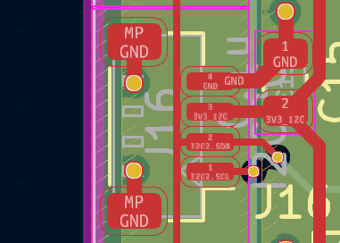
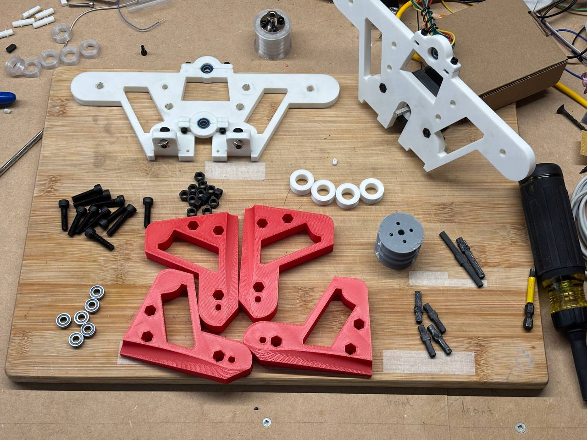
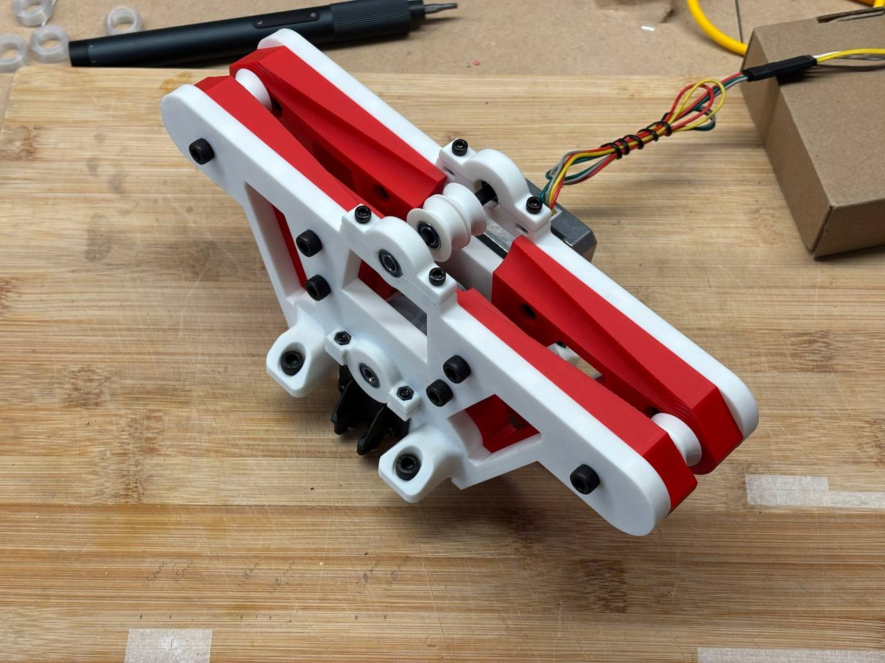
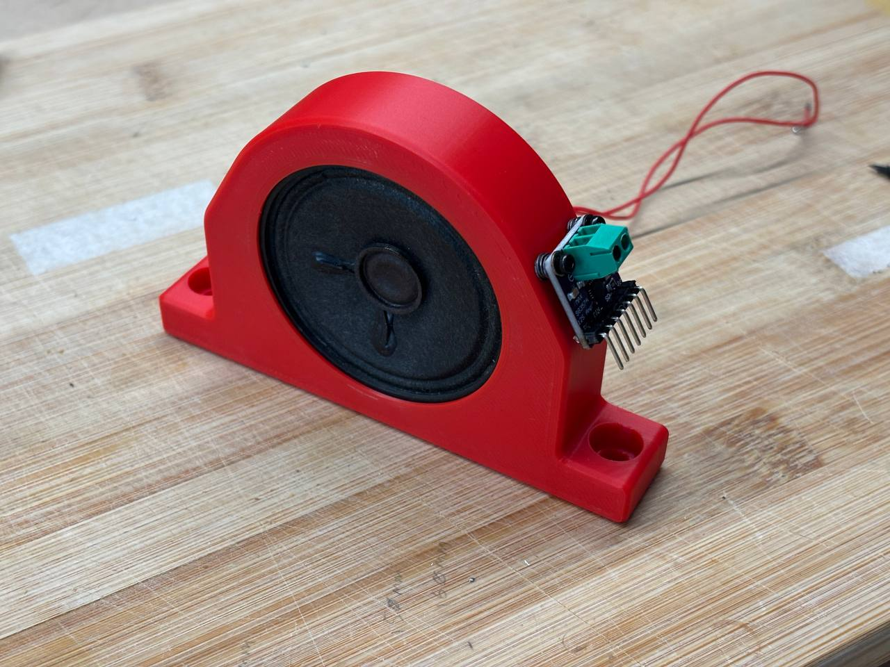
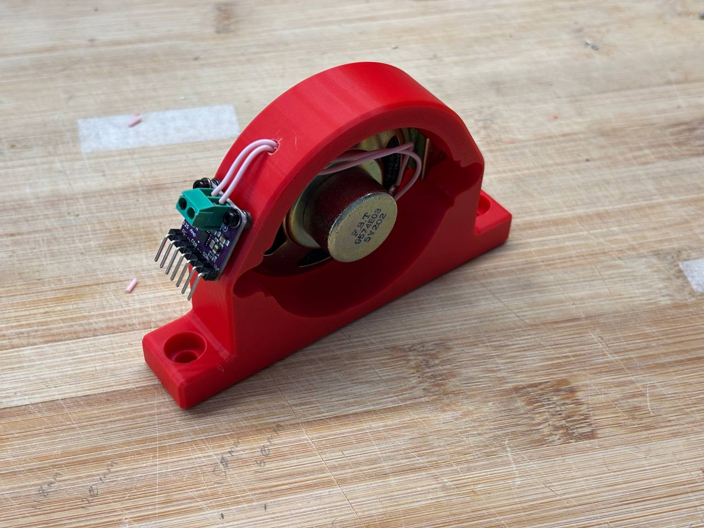
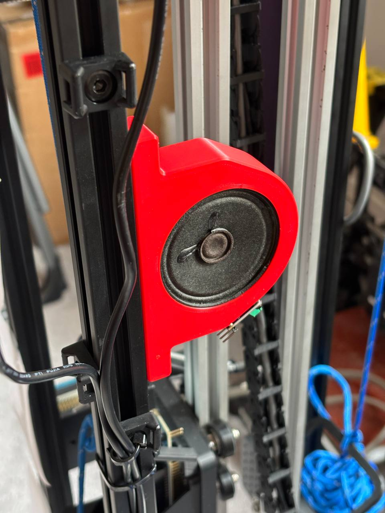
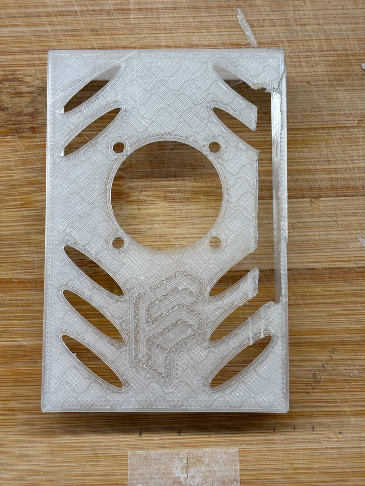
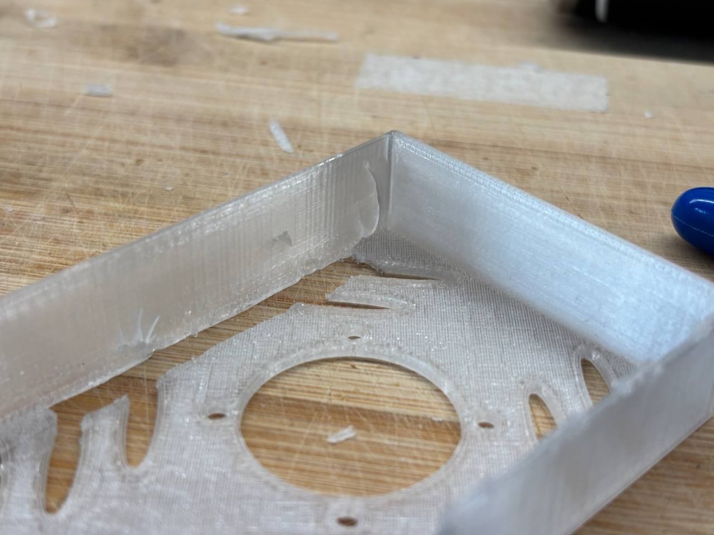
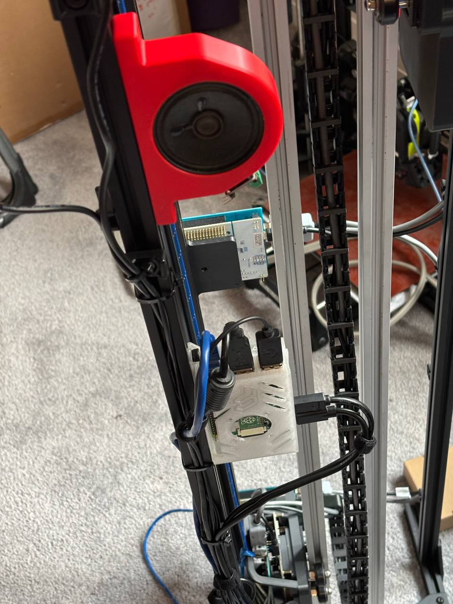
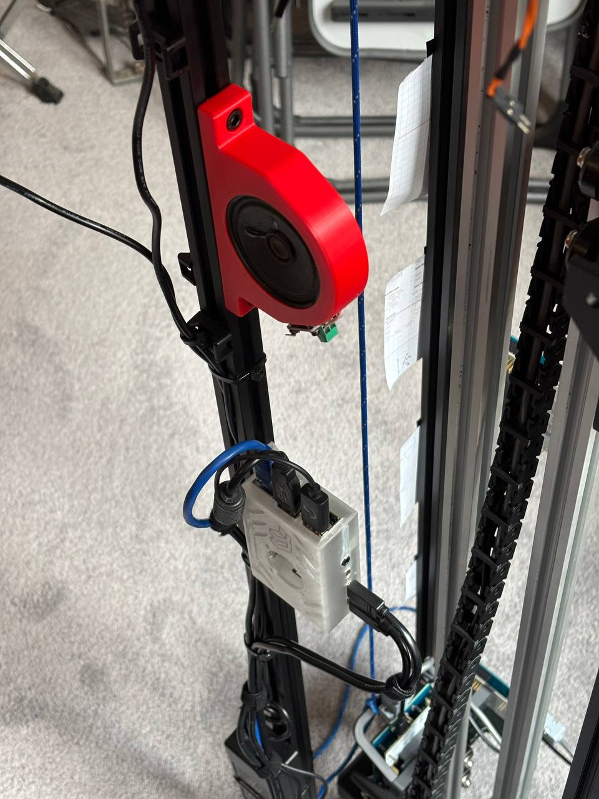

Finished Refactored CAN Module
I completed the refactored CAN module and tested it with the physical PEAK CAN adapter. I also resolved all compiler warnings produced by this module.
Daily Logbook Entry
CAN and FSM development, elevator hardware assembly, and sensor wiring
I completed the refactored CAN module and tested it with the physical PEAK CAN adapter. I also resolved all compiler warnings produced by this module.
I merged Nick's partially implemented database module and began integrating it into the FSM. The FSM now needs to support:
Fault mode can be cleared by toggling maintenance mode through the web interface. The reasoning is that maintenance personnel need a controlled way to return the elevator to service after correcting a fault.
I also fixed the remaining scheduler-module compiler warning and integrated the scheduler into the FSM. For the current Phase 2 implementation, the scheduler treats all floor requests as upward requests so that the existing Floor Controller code does not need to be changed.
I planned a proper cable for the I²C ToF sensor connected to the MoP Communications PCB used by the Elevator Controller. The cable uses a JST-PH2.0 connector at the DFRobot ToF board and JST-SM connectors at the Elevator Controller PCB. The required I²C pinout is shown below.

I laid out the components for the third revision of the pulley-mount assembly.

I then assembled the new pulley mount.

The new pulley system works much better, and the rope now follows the expected path. However, the motor still skips steps intermittently. Leighton later suggested that the issue might be related to motor temperature, and I observed that skipped steps occur more frequently when the motor is hot.
I also assembled the speaker mount.


I added a hole for the speaker wires.

I modified the new Raspberry Pi enclosure by adding an opening for the GPIO header. The original model did not include this opening, but the project requires GPIO access for the I²S amplifier wiring.

I accidentally cracked the enclosure while modifying it.

The enclosure also required M2.5 screws. Because of the printed-hole tolerances, only two of the four screws held securely; the other two did not engage. The enclosure halves also did not snap together, so I used hot glue to hold them in place.


The new pulley mount uses a different drive-pulley diameter, so I reviewed the Elevator Controller stepper-motor configuration.
The ToF sensor reports a travel range from approximately 56 mm to 850 mm, or about 800 mm of usable travel. This motion corresponds to approximately 3,140 half-steps.
I determined that I can reuse the travel-distance calibration already measured and stored in the Elevator Controller code rather than creating a new independent calibration.
No external sources were cited in this entry.